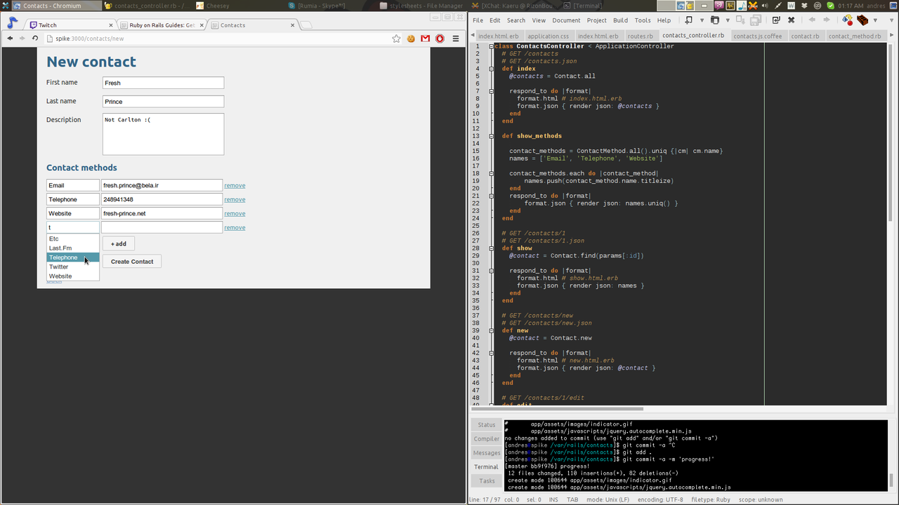

Pejibaye Blog
Pejibaye Blog
Trying out Ruby on Rails
I've heard a lot of stuff about RoR for a while, so I decided to finally try it out and see what all the fuss is about.
What is Ruby on Rails? A web framework that runs on the Ruby programming language.
First impressions: too much magic going on. It seems like a good thing for quick development, but I prefer knowing exactly what is going on in case anything goes wrong so the problem can be fixed easily. For this reason, I probably will not use RoR on any on my projects until I understand more about it.
Things I liked about RoR: the ActiveRecord ORM, and the built-in REST support. I also liked that it is very easy to deploy once you know what you're doing.
Thinks I dislike so far: using SCSS and Coffeescript by default. These could add to the cognitive load of beginner, and they have to wrap their head around how RoR first has to process these files into what the browser can understand (CSS y JavaScript, respectively).
I've never been a big fan of Coffeescript. I think it's annoying to debug and I would rather write plain JavaScript, but that's just my opinion. However, I do think it has a nice syntax.
I had heard of SCSS, but I had never used it. It's very enjoyable to use, since you can nest CSS definitions, and it has some neat features that make it a lot easier to maintain stylesheets, such as variables and functions.
When learning a new framework, I try to follow the official tutorial, but tweaking the steps a bit in order to create a different application.
To learn RoR, I decided to make a small contacts application, where you can add contacts to a list and edit/delete them. It's on a repo at Github, in case you wanna take a look.

Now I'm also learning Django (a python web framework), and everything seems a lot less magical, so I will probably use it instead of RoR. Both of them seem to solve the same problem (CRUD apps).